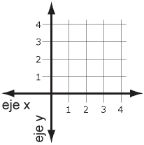

FlexBox
Cuando describimos a flexbox como unidimensional destacamos
el hecho que flexbox maneja el layout en una sola dimensión
a la vez, ya sea como fila o como columna.
La propiedad display permite definir el tipo de contenedor flexible.
Los dos ejes de FlexBox
Cuando trabajamos con flexbox necesitamos pensar en términos
de dos ejes — el eje primario(eje x) y el eje secundario (eje y). El eje
primario está definido por la propiedad flex-direction, y
eje secundario es perpendicular a este. Todo lo que hacemos con
flexbox está referido a estos dos ejes, por lo que vale la pena
entender cómo trabajan desde el principio.

justify-content
(Eje primario)
Alinea elementos horizontalmente y acepta los siguientes valores:
- flex-start: Alinea elementos al lado izquierdo del contenedor.
- flex-end: Alinea elementos al lado derecho del contenedor.
- center: Alinea elementos en el centro del contenedor.
- space-between: Muestra elementos con la misma distancia entre ellos.
- space-around: Muestra elementos con la misma separación alrededor de ellos.
align-items
(Eje secundario)
Esta propiedad CSS alinea elementos verticalmente y acepta los siguientes valores:
- flex-start: Alinea elementos a la parte superior del contenedor.
- flex-end: Alinea elementos a la parte inferior del contenedor.
- center: Alinea elementos en el centro (verticalmente hablando) del contenedor.
- baseline: Muestra elementos en la línea base del contenedor.
- stretch: Elementos se estiran para ajustarse al contenedor.
flex-direction
Esta propiedad CSS define la dirección de los elementos en el contenedor, y acepta los siguientes valores:
- row: Los elementos son colocados en la misma dirección del texto.
- row-reverse: Los elementos son colocados en la dirección opuesta al texto.
- column: Los elememtos se colocan de arriba hacia abajo.
- column-reverse: Los elementos se colocan de abajo hacia arriba.
order
Por defecto, los elementos tienen un valor 0, pero nosotros podemos usar esta propiedad para establecerlo
a un número entero positivo o negativo.
Ejemplo: order:-3;
align-self
(Eje secundario)
Esta propiedad acepta los mismos valores de align-items y sus valores son usados para un elemento específico (Contenido).
- flex-start: Alinea elementos a la parte superior del contenedor.
- flex-end: Alinea elementos a la parte inferior del contenedor.
- center: Alinea elementos en el centro (verticalmente hablando) del contenedor.
- baseline: Muestra elementos en la línea base del contenedor.
- stretch: Elementos se estiran para ajustarse al contenedor.
flex-wrap
- nowrap: Cada elemento se ajusta en una sola línea.
- wrap: Los elementos se envuelven alrededor de líneas adicionales.
- wrap-reverse: Los elementos se envuelven alrededor de líneas adicionales en reversa.
flex-flow
Esta propiedad, acepta un valor de flex-direction y flex-wrap separado por un espacio.
Ejemplo: flex-flow: wrap column-reverse;
align-content
Se usa para establecer como múltiples líneas están separadas una de otra. Esta propiedad acepta
los siguientes valores:
- flex-start: Las líneas se posicionan en la parte superior del contenedor.
- flex-end: Las líneas se posicionan en la parte inferior del contenedor.
- center: Las líneas se posicionan en el centro (verticalmente hablando) del contenedor.
- space-between: Las líneas se muestran con la misma distacia entre ellas.
- space-around: Las líneas se muestran con la misma separación alrededor de ellas.
- stretch: Las líneas se estiran para ajustarse en el contenedor.
vertical-align
La propiedad vertical-align de CSS especifica el alineado vertical de un elemento en
línea o una celda de una tabla.
- baseline: Alinea la línea base del elemento con la línea base del padre.
- top: Alinea la parte superior del elemento con el elemento más alto en la línea.
- middle: Las líneas se estiran para ajustarse en el contenedor.
Juego FlexBox Froggy